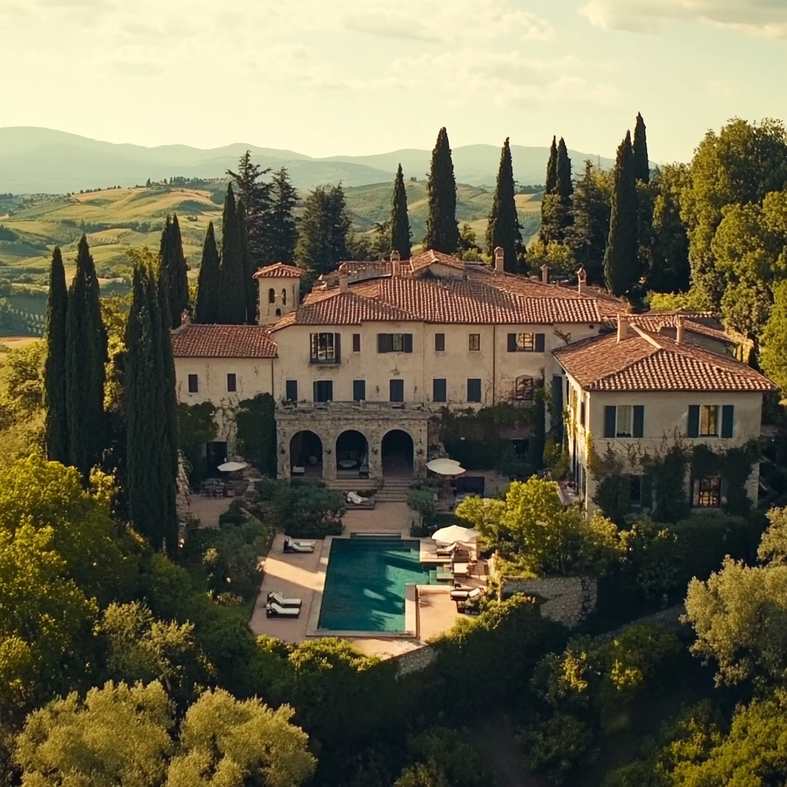

Dinastia Belcastro

Trama
Dinastia racconta la storia di una famiglia italiana che lotta per il potere, l'eredità e il controllo di un impero. Intrighi, tradimenti, furti e rivalità spingono ogni membro a prendere decisioni difficili. Carlo Giacalone, il regista di questa splendida docuserie firmata CamaleonTV, ha superato se stesso portando la famiglia di potere italiana nelle case di tutto il mondo senza cadere nei soliti clichè di mafia, spaghetti e mandolino. Dinastia Belcastro è una docuserie potente, drammatica e forte che scava a fondo nelle debolezze dell'essere umano e riesce a elevare quello che nasce come un reality, a un vero prodotto seriale romanzato.
Episodi
- Episodio 1: Eredità centenaria
- Episodio 2: L'ascesa
- Episodio 3: I rischi del mestiere
- Episodio 4: Il ritorno del figlior prodigo
- Episodio 5: Gli oscuri segreti di Villa Belcastro
- Episodio 6: Le ombre dell'Ordine
- Episodio 7: Segreti di famiglia
- Episodio 8: Il furto del pugnale
- Episodio 9: Il tradimento
- Episodio 10: In produzione
- Episodio 11: In produzione
- Episodio 12: In produzione
Cast
Protagonista: Massimo Belcastro (se stesso)
Protagonista: Lavinia Belcastro (se stessa)
Protagonista: Alessia Maddalena Belcastro (se stessa)
Protagonista: Kevin Serrano (se stesso)
Protagonista: Silvana Conti (se stessa)
Protagonista: Alina Daarie (se stessa)
Cast Tecnico
Regia: Carlo Giuseppe Giacalone
Sceneggiatura: Roberto Bellarini
Riprese: Sahid Rostavi